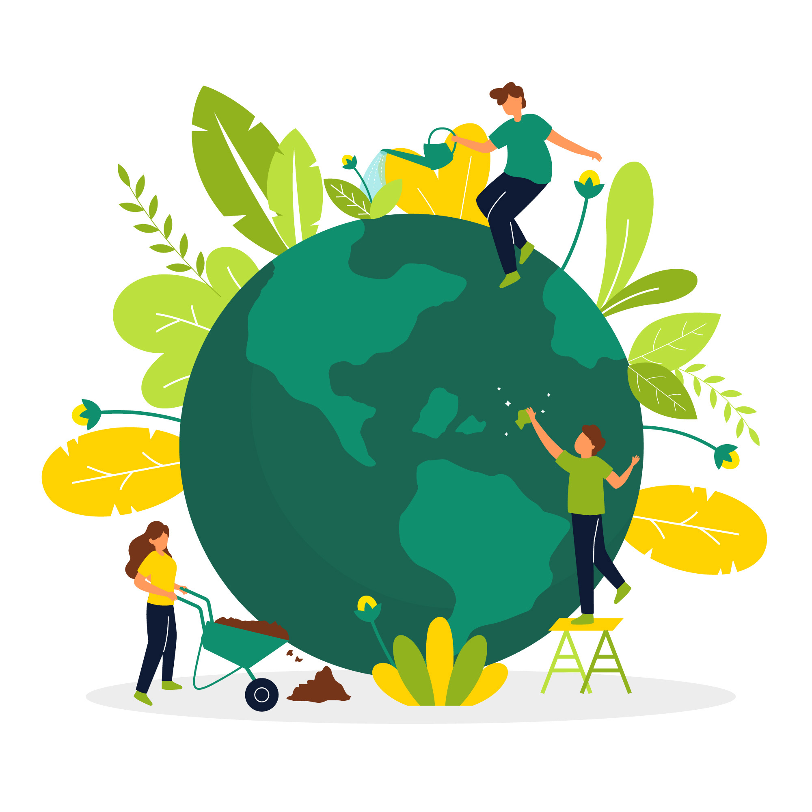

I’m excited about projects that combine thoughtful design with real-world impact. Below are highlights from my
research in natural language processing, three cybersecurity engineering internships at NASA JPL, and web
projects where I experimented with accessibility, responsive layouts, and data-driven features.
UC San Diego • Research
NLP & LLM Research Assistant
I contributed to research focused on large language models, data quality, and evaluation. My work involved
experimenting with prompts and training data, organizing messy datasets, and helping analyze how model
outputs changed when we adjusted different parameters. This project strengthened both my analytical skills
and my curiosity about how people and AI systems can collaborate.
NLPLLMsPythonResearch
NASA Jet Propulsion Laboratory • 3× Intern
Cybersecurity Engineering Intern
• Supported security teams by investigating logs, dashboards, and alerts to understand how systems behaved
under real workloads.
• Helped automate parts of routine analysis, reducing manual checks and giving engineers faster feedback on
unusual activity and potential incidents.
• Collaborated with mentors to document findings in clear, visual formats that teammates could reuse
during future projects and reviews.
CybersecurityNetworkingLog AnalysisInternship
Google CSSI Program
Help the Environment Website

I designed this website to advocate for the environment using pure JavaScript, HTML, and CSS. I focused on
clear layout, friendly visuals, and simple calls to action that encourage visitors to learn and participate.
I also tested my pages with accessibility tools like WAVE and contrast checkers to keep the experience
inclusive and readable.